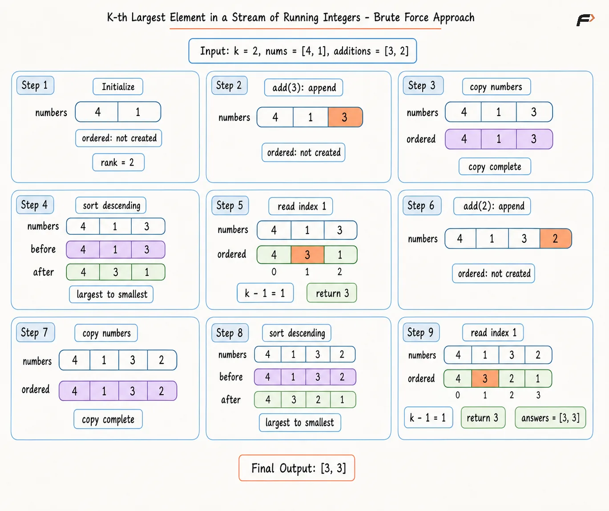
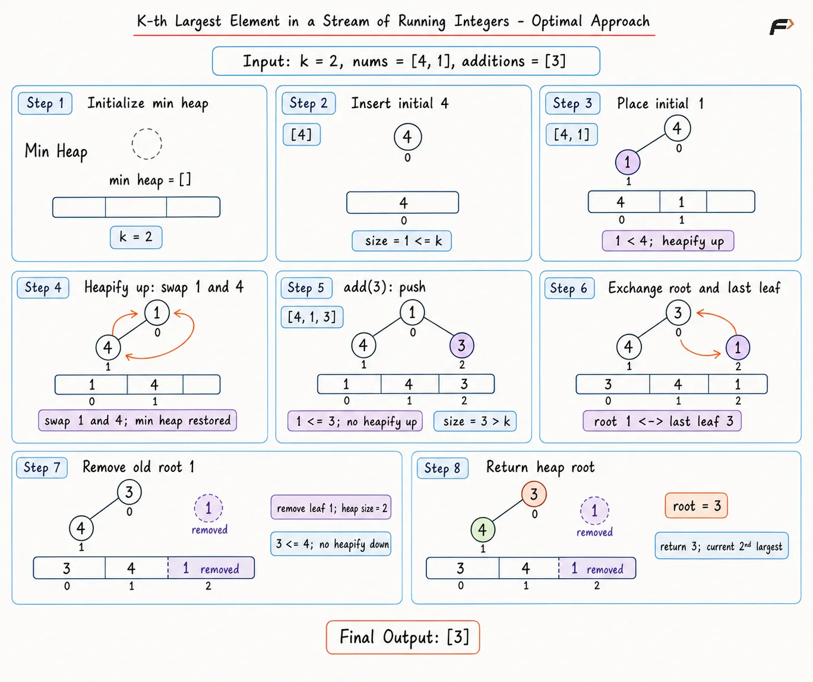

Archived from https://takeuforward.org/blogs/data-structure-and-algorithm/kth-largest-element-stream
Implement a class named KthLargest for a growing stream of integers. The class must support two operations:
- KthLargest(k, nums): Initialize rank k and the initial stream nums. - add(value): Append value and return the kth largest stream value after the insertion.
The kth largest value follows sorted order, not distinct-value order. Duplicate values occupy separate positions. Every add call occurs after the stream contains at least k values.
Example 1
Input:[KthLargest(3, [4, 6, 8, 2]), add(5), add(10), add(3)] Output:[null, 5, 6, 6] Explanation: The initial stream has 8, 6, and 4 as the three largest values. Insertion of 5 changes the third largest value to 5. Insertion of 10 changes the third largest value to 6. Insertion of 3 leaves the answer at 6.
Example 2
Input:[KthLargest(1, []), add(-3), add(-1), add(-4)] Output:[null, -3, -1, -1] Explanation: Rank 1 asks for the largest value. The running answers become -3, -1, and -1, so negative values require no special handling.
The simplest way to find the k-th largest value in a stream is to keep every value seen so far. After each new value arrives, sorting all stored values makes the required rank directly available.
This approach is easy to understand and verify, but it repeatedly sorts the entire stream. As more values arrive, the same elements are sorted again even though only the k-th largest value is needed.
Algorithm
Store k and all initial stream values so every later add operation can use the complete stream.
When a new value arrives, append it to the stored values because it becomes part of the stream.
Copy the stored values before sorting so the original stream remains unchanged for future additions.
Sort the copied array in descending order so the largest values appear first.
Access index k - 1 because zero-based indexing places the k-th largest value at that position.
Return the value at index k - 1 as the updated k-th largest element.
Dry Run

kth-largest-stream brute
Solution
#include <bits/stdc++.h>
using namespace std;
class Solution {
private:
vector<int> numbers;
int rank;
public:
// Initialize the rank and initial stream.
Solution(int k, vector<int>& nums) {
// Store the requested sorted position.
rank = k;
// Preserve every initial stream value.
numbers = nums;
}
// Add a value and return the current kth largest.
int add(int value) {
// Append the newest stream value.
numbers.push_back(value);
// Copy values so stream history stays unchanged.
vector<int> ordered = numbers;
// Sort the copy from largest to smallest.
sort(ordered.begin(), ordered.end(), greater<int>());
// Rank k uses zero-based index k minus one.
return ordered[rank - 1];
}
};
// Driver code
int main() {
vector<int> nums = {4, 6, 8, 2};
Solution obj(3, nums);
cout << obj.add(5) << "\n";
cout << obj.add(10) << "\n";
cout << obj.add(3) << "\n";
return 0;
}
from typing import List
class Solution:
# Initialize the rank and initial stream.
def __init__(self, k: int, nums: List[int]) -> None:
# Store the requested sorted position.
self.rank = k
# Preserve every initial stream value.
self.numbers = nums.copy()
# Add a value and return the current kth largest.
def add(self, value: int) -> int:
# Append the newest stream value.
self.numbers.append(value)
# Copy values so stream history stays unchanged.
ordered = self.numbers.copy()
# Sort the copy from largest to smallest.
ordered.sort(reverse=True)
# Rank k uses zero-based index k minus one.
return ordered[self.rank - 1]
# Driver code
def main() -> None:
nums = [4, 6, 8, 2]
obj = Solution(3, nums)
print(obj.add(5))
print(obj.add(10))
print(obj.add(3))
if __name__ == "__main__":
main()
import java.util.*;
class Solution {
private ArrayList<Integer> numbers;
private int rank;
// Initialize the rank and initial stream.
public Solution(int k, int[] nums) {
// Store the requested sorted position.
rank = k;
// Create storage for every stream value.
numbers = new ArrayList<>();
// Preserve every initial stream value.
for (int value : nums) {
numbers.add(value);
}
}
// Add a value and return the current kth largest.
public int add(int value) {
// Append the newest stream value.
numbers.add(value);
// Copy values so stream history stays unchanged.
ArrayList<Integer> ordered = new ArrayList<>(numbers);
// Sort the copy from largest to smallest.
ordered.sort(Collections.reverseOrder());
// Rank k uses zero-based index k minus one.
return ordered.get(rank - 1);
}
}
// Driver code
public class Main {
public static void main(String[] args) {
int[] nums = {4, 6, 8, 2};
Solution obj = new Solution(3, nums);
System.out.println(obj.add(5));
System.out.println(obj.add(10));
System.out.println(obj.add(3));
}
}
class Solution {
// Initialize the rank and initial stream.
constructor(k, nums) {
// Store the requested sorted position.
this.rank = k;
// Preserve every initial stream value.
this.numbers = nums.slice();
}
// Add a value and return the current kth largest.
add(value) {
// Append the newest stream value.
this.numbers.push(value);
// Copy values so stream history stays unchanged.
const ordered = this.numbers.slice();
// Sort the copy from largest to smallest.
ordered.sort((first, second) => second - first);
// Rank k uses zero-based index k minus one.
return ordered[this.rank - 1];
}
}
// Driver code
function main() {
const nums = [4, 6, 8, 2];
const obj = new Solution(3, nums);
console.log(obj.add(5));
console.log(obj.add(10));
console.log(obj.add(3));
}
main();
Note: Repeated full sorting may fail for a long stream. Growing collection sizes create excessive work, so an online judge may report Time Limit Exceeded.
Complexity Analysis
Time Complexity:O(S log S) per add operation, where S is the current number of values in the stream, because all S values are copied and sorted. Initial construction takes O(N), where N is the number of initial stream values.
Space Complexity:O(S), because the stored stream and its sorted copy each contain up to S values.
Optimal Approach
The brute force method rebuilds a complete order after every insertion. Only the largest k values can affect the answer. A min-heap of size k keeps exactly the useful group, and the heap root remains the smallest member of the group: the current kth largest value.
Each new value enters the heap. A size above k removes the smallest value. Duplicate values remain separate heap entries, so the kth largest value follows sorted position rather than distinct rank.
Algorithm
Begin with rank k and an empty min-heap, so storage can stay limited to the largest k values.
Feed every initial value into the heap, allowing each number to compete for a place in the top-k group.
Remove the heap root after size exceeds k because the smallest candidate cannot remain among the largest k values.
Reuse the same push-and-trim rule for every add call, preserving the top-k group after each insertion.
Keep at most k values in the heap so stream growth never increases the maintained working set.
Return the heap root because the smallest value among the largest k values has overall rank k.
Dry Run

kth-largest-stream optimal
Solution
#include <bits/stdc++.h>
using namespace std;
class Solution {
private:
priority_queue<int, vector<int>, greater<int>> minHeap;
int rank;
public:
// Initialize the tracker with the top k values.
Solution(int k, vector<int>& nums) {
// Store the requested sorted position.
rank = k;
// Process every initial stream value.
for (int value : nums) {
// Add a new candidate for the top k group.
minHeap.push(value);
// Extra size means the smallest value is unneeded.
if (minHeap.size() > rank) {
minHeap.pop();
}
}
}
// Add a value and return the current kth largest.
int add(int value) {
// Add a new candidate for the top k group.
minHeap.push(value);
// Extra size means the smallest value is unneeded.
if (minHeap.size() > rank) {
minHeap.pop();
}
// The smallest top-k value has overall rank k.
return minHeap.top();
}
};
// Driver code
int main() {
vector<int> nums = {4, 6, 8, 2};
Solution obj(3, nums);
cout << obj.add(5) << "\n";
cout << obj.add(10) << "\n";
cout << obj.add(3) << "\n";
return 0;
}
import heapq
from typing import List
class Solution:
# Initialize the tracker with the top k values.
def __init__(self, k: int, nums: List[int]) -> None:
# Store the requested sorted position.
self.rank = k
# Create an empty min-heap.
self.min_heap: List[int] = []
# Process every initial stream value.
for value in nums:
# Add a new candidate for the top k group.
heapq.heappush(self.min_heap, value)
# Extra size means the smallest value is unneeded.
if len(self.min_heap) > self.rank:
heapq.heappop(self.min_heap)
# Add a value and return the current kth largest.
def add(self, value: int) -> int:
# Add a new candidate for the top k group.
heapq.heappush(self.min_heap, value)
# Extra size means the smallest value is unneeded.
if len(self.min_heap) > self.rank:
heapq.heappop(self.min_heap)
# The smallest top-k value has overall rank k.
return self.min_heap[0]
# Driver code
def main() -> None:
nums = [4, 6, 8, 2]
obj = Solution(3, nums)
print(obj.add(5))
print(obj.add(10))
print(obj.add(3))
if __name__ == "__main__":
main()
import java.util.*;
class Solution {
private PriorityQueue<Integer> minHeap;
private int rank;
// Initialize the tracker with the top k values.
public Solution(int k, int[] nums) {
// Store the requested sorted position.
rank = k;
// Create an empty min-heap.
minHeap = new PriorityQueue<>();
// Process every initial stream value.
for (int value : nums) {
// Add a new candidate for the top k group.
minHeap.offer(value);
// Extra size means the smallest value is unneeded.
if (minHeap.size() > rank) {
minHeap.poll();
}
}
}
// Add a value and return the current kth largest.
public int add(int value) {
// Add a new candidate for the top k group.
minHeap.offer(value);
// Extra size means the smallest value is unneeded.
if (minHeap.size() > rank) {
minHeap.poll();
}
// The smallest top-k value has overall rank k.
return minHeap.peek();
}
}
// Driver code
public class Main {
public static void main(String[] args) {
int[] nums = {4, 6, 8, 2};
Solution obj = new Solution(3, nums);
System.out.println(obj.add(5));
System.out.println(obj.add(10));
System.out.println(obj.add(3));
}
}
class MinHeap {
// Create empty heap storage.
constructor() {
this.data = [];
}
// Return the current heap size.
size() {
return this.data.length;
}
// Return the smallest heap value.
top() {
return this.data[0];
}
// Insert a value and restore heap order.
push(value) {
// Place the value at the next leaf position.
this.data.push(value);
let index = this.data.length - 1;
// Move the value upward across larger parents.
while (index > 0) {
const parent = Math.floor((index - 1) / 2);
// Valid parent order ends the upward movement.
if (this.data[parent] <= this.data[index]) {
break;
}
// Exchange the broken parent-child order.
this.#swap(parent, index);
index = parent;
}
}
// Remove and return the smallest heap value.
pop() {
const root = this.data[0];
const last = this.data.pop();
// A remaining value must occupy the root position.
if (this.data.length > 0) {
this.data[0] = last;
this.#siftDown();
}
return root;
}
// Move the root downward to restore heap order.
#siftDown() {
let index = 0;
// Continue until both child links become valid.
while (true) {
let smallest = index;
const left = 2 * index + 1;
const right = 2 * index + 2;
// A smaller left child becomes the next target.
if (
left < this.data.length &&
this.data[left] < this.data[smallest]
) {
smallest = left;
}
// A smaller right child becomes the next target.
if (
right < this.data.length &&
this.data[right] < this.data[smallest]
) {
smallest = right;
}
// Matching index means valid local heap order.
if (smallest === index) {
break;
}
// Exchange the root with the smaller child.
this.#swap(index, smallest);
index = smallest;
}
}
// Exchange two heap positions.
#swap(first, second) {
const saved = this.data[first];
this.data[first] = this.data[second];
this.data[second] = saved;
}
}
class Solution {
// Initialize the tracker with the top k values.
constructor(k, nums) {
// Store the requested sorted position.
this.rank = k;
// Create an empty min-heap.
this.minHeap = new MinHeap();
// Process every initial stream value.
for (const value of nums) {
// Add a new candidate for the top k group.
this.minHeap.push(value);
// Extra size means the smallest value is unneeded.
if (this.minHeap.size() > this.rank) {
this.minHeap.pop();
}
}
}
// Add a value and return the current kth largest.
add(value) {
// Add a new candidate for the top k group.
this.minHeap.push(value);
// Extra size means the smallest value is unneeded.
if (this.minHeap.size() > this.rank) {
this.minHeap.pop();
}
// The smallest top-k value has overall rank k.
return this.minHeap.top();
}
}
// Driver code
function main() {
const nums = [4, 6, 8, 2];
const obj = new Solution(3, nums);
console.log(obj.add(5));
console.log(obj.add(10));
console.log(obj.add(3));
}
main();
Complexity Analysis
Time Complexity:O(log k) per add operation, because each call performs one heap insertion and at most one removal on a heap of size at most k. Building the initial heap from N values takes O(N log k), where N is the number of initial stream values.
Space Complexity:O(k), because the min-heap stores at most k values regardless of the total stream length.
Interview follow-up Questions
A size-k min-heap stores the largest k stream values. The smallest stored value has rank k among all processed values and stays at the heap root.